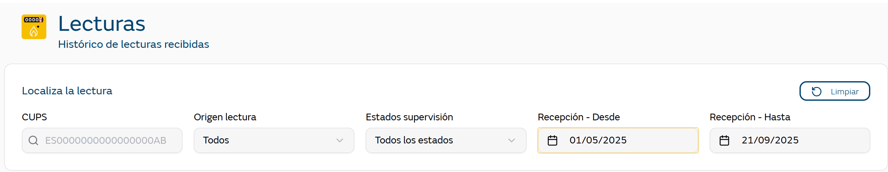
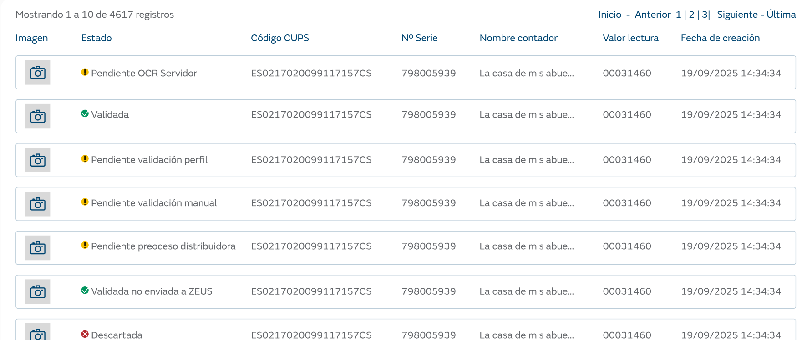

Muestra un listado histórico de las lecturas/imágenes de contadores procesadas en el sistema, tanto actuales como históricas, con capacidad de filtrado y paginación.

CUPS: Buscar por código CUPS específico de 20 dígitos o código parcial Se recomienda el uso de códigos completos para mejorar el rendimiento
Origen: Todos, YoLeoGas, Operaciones (antiguamente Hermes)
Estado: Múltiples estados del procesamiento (Pendiente validación, Validada manual, Procesada, Descartada, etc.)
Fecha: Rango de fechas desde / hasta con selector de calendario y periodo predefinido inicialmente de una semana. Se avisará al usuario si el rango de fechas seleccionado es amplio.
El usuario no deberá pulsar sobre ninguna opción para filtrar los datos. La tabla de resultados se actualizará automáticamente.

El informe inicialmente visualiza los siguientes campos:
Foto: Miniatura de la imagen del contador (100px)
Estado: Estado actual del procesamiento con tooltip de errores
CUPS: Código del punto de suministro
Nº Serie: Número de serie del contador
Nombre del contador: nombre del perfil creado por el cliente.
Valor Lectura: Valor final de la lectura tras el proceso.
Fecha Proceso: Fecha y hora de procesamiento en el móvil.
Existirá una opción para seleccionar los campos que se visualizan en el listado, pudiendo agregar.
Origen de la lectura: image_input_channel
Valores de lectura: Además del campo de lectura manual, se añaden:
image_meter_reading_value_mobile` - Valor de lectura desde móvil
image_meter_reading_value_user` - Valor de lectura del usuario
image_meter_reading_value_server` - Valor de lectura desde servidor
Información de confianza de la lectura:
image_meter_reading_confidence_mobile` - Confianza de lectura movil
image_meter_reading_confidence_server` - Confianza de lectura servidor
Información de la versión generadora de la lectura:
Plataforma: Android o IOS.
Modelo de teléfono: datos enviados por el terminal. Xiaomi 24040RN64Y, iPhone17,5
Versión de la aplicación: 19.4, etc.
Información de envío a Backend:
Fecha de envío a backend
En la pantalla, el usuario puede realizar las siguientes acciones:
Limpiar: Resetear todos los filtros
Paginación: Navegar entre páginas (Primera, Anterior, Siguiente, Última)
Ver imagen: Click en miniatura para ver imagen completa
Modificación de columnas: Añadir / Eliminar campos a la visualización.